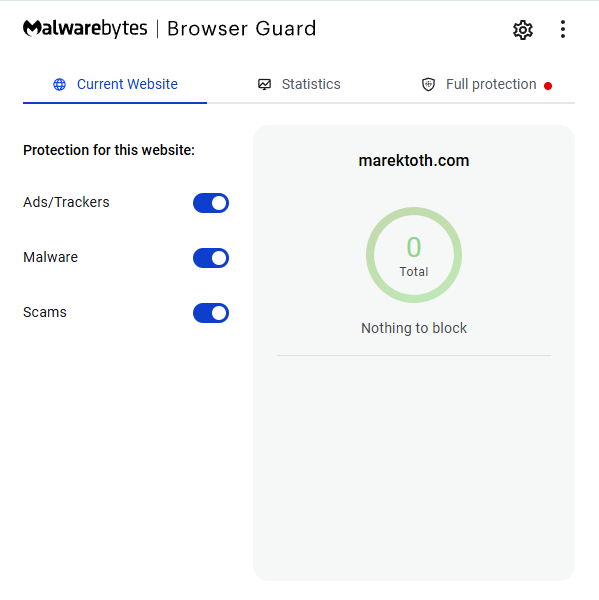
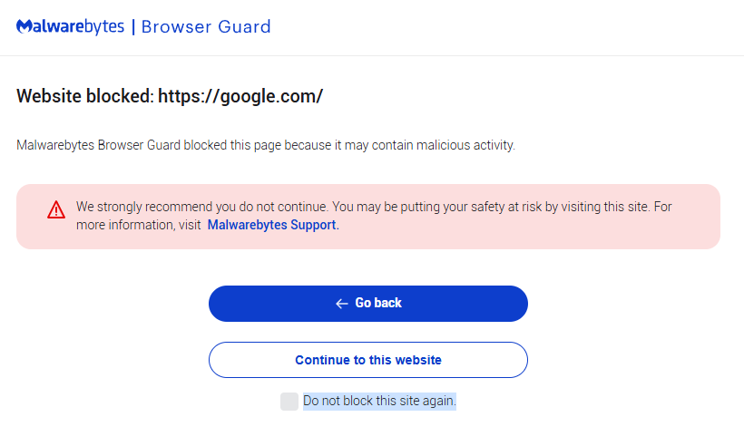
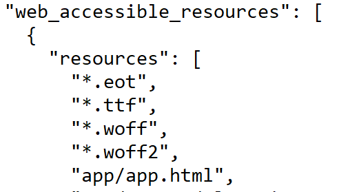
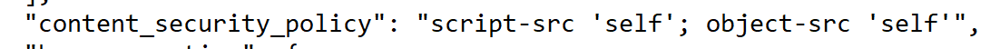
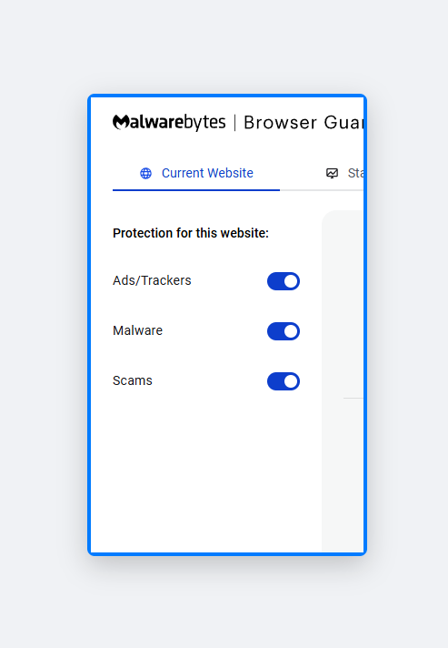
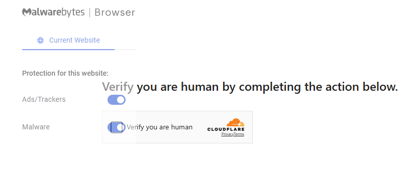
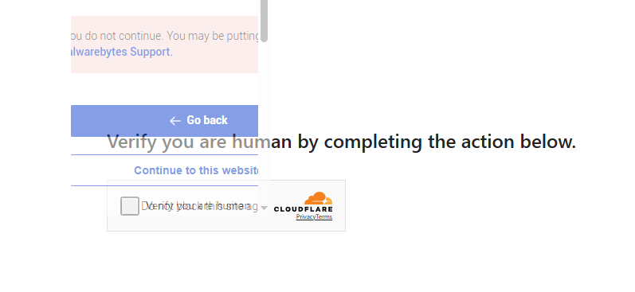
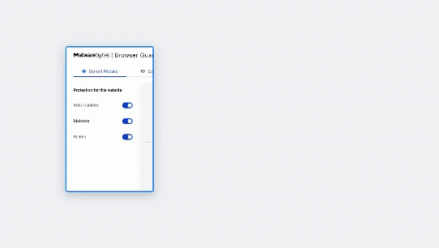
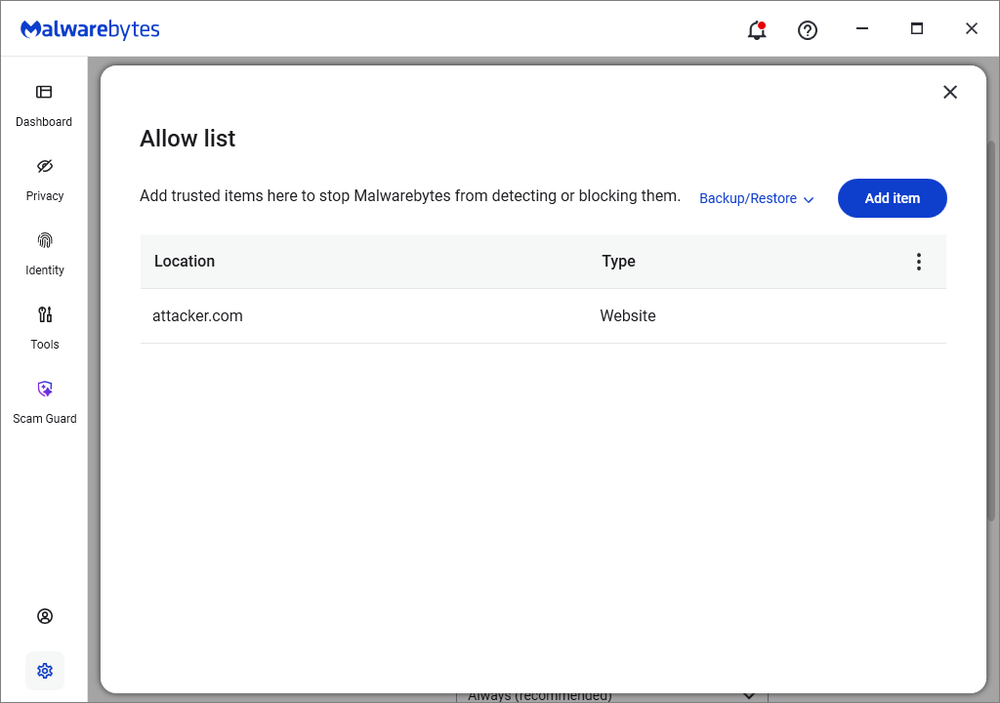

Introduction
Today's antivirus software does much more than just sit on your computer. To keep you safe from malicious websites, fake emails, and sneaky downloads, many companies use browser extensions.
These sometimes work together with locally installed antivirus software to protect you while you're browsing the internet.
Now imagine performing a completely normal action, like clicking "Accept Cookies" or solving a captcha (things you might do many times a day while visiting websites), on a webpage you just visited and behind the scenes your browser extension silently creates an exclusion that gets synced into your locally installed antivirus.
Background
While researching how Browser Guard detects malicious websites (check it here), I came across a DEF CON 33 talk by Marek Tóth on DOM-based extension clickjacking.
The talk focuses on password managers and highlights a new type of browser extension clickjacking he calls DOM-based extension clickjacking. My finding does not use that new technique. It relies on the older, iframe-based approach he mentions as the one that already existed, where the extension's own pages are loaded inside an iframe, rather than manipulating the UI an extension injects into a page. Either way, the talk was what made me wonder whether Browser Guard could be clickjacked at all.
How Browser Guard works
Browser Guard is a Manifest V3 extension. There are at least two places in its UI where protection can be switched off for a site.
The popup
When you click the extension icon, the "Current Website" tab shows switches for Ads/Trackers, Malware, and Scams for the site you are on. If you turn any of these toggles off, Browser Guard stops applying that protection to that site.

The block page
When Browser Guard flags a site, it redirects the request to a block page. It shows the reason for the block and two buttons that let the user go back or ignore the warning and continue to the website.
You also have the option of checking the "Do not block this site again". If you tick this checkbox and continue, the domain is added to the exclusion list and is never blocked again.

Finding the vulnerability
The first question was "can a page load the main Browser Guard UI in an iframe?"
By doing a quick search for the word "Malware" in the html files of the extension, I found the page that has the three checkboxes (Ads/Tracker, Malware and Scams): \app\app.html
For this to work two things need to be true:
- The
app.htmlpage needs to be listed underweb_accessible_resources - The CSP must not block iframes from loading extension pages.
If we check manifest.json we can see the page is listed under web_accessible_resources:

Additionally, there is a defined CSP but it does not secure against iframes including the page:

Those two conditions are enough for classic iframe clickjacking. A simple iframe loading app.html worked immediately:

Building a proof of concept
A plain iframe is enough to prove the vulnerability, but it helps to show the attack the way a victim would actually see it, so I wrapped it in something people click without thinking, a fake captcha.
Setup:
- A "Verify you are human" captcha as a decoy.
- The real Browser Guard UI loaded on top in an iframe at very low opacity.
- The iframe lined up so the button I care about sits right under the part of the decoy the victim is about to click.
Two attack variants
One click
Put the popup's Malware toggle under the decoy. One click turns it off, and Browser Guard stops applying malware protection on the site the victim is on.
You might ask what the point is if the victim is already on the site. The point is everything Browser Guard does after the page loads. One example is its ClickFix / clipboard protection.
ClickFix is a prominent social engineering and copy-paste cyberattack technique where malicious websites trick users into manually executing harmful system commands. Attackers use fake error messages, browser crashes, or phony CAPTCHA verifications (such as fake Cloudflare or Google prompts) to convince victims to press keys like Windows + R, paste hidden clipboard code (Ctrl + V), and hit Enter.
If you clickjack the Malware toggle off first, that warning never fires, and the attacker's own page has disabled the protection that would have caught its next step.

Two clicks
This one targets the block page, and it is the more serious of the two. Two clicks, ticking "Do not block this site again" and then "Continue to this website", permanently add a domain to the exclusion list.
The block page takes the domain it's "blocking" from its own URL parameters, url and host. Nothing stops an attacker from pointing it at any domain they choose:
chrome-extension://ihcjicgdanjaechkgeegckofjjedodee/app/eventpages/block-mv3.html?referrer=null&url=https%3A%2F%2F<WEBSITE>%2F&host=<WEBSITE>
This would involve two steps:
- Position the checkbox "Do not block this site again" on top of the captcha.
- After the victim clicks the first time, move the "Continue to this website" button to the correct spot. You can either move the button to the same place on the captcha (pretend the first click didn't do anything) or just make the captcha have a second verification.

To move the iframe to the next button, we can use the technique mentioned by Marek:
const container = document.getElementById('iframe-container');
const anchor = document.getElementById('focus-anchor');
function init() {
anchor.focus();
}
function handleIframeClick() {
setTimeout(() => {
const newTop = Math.floor(Math.random() * 70) + 10;
const newLeft = Math.floor(Math.random() * 70) + 10;
container.style.top = newTop + "%";
container.style.left = newLeft + "%";
anchor.focus();
}, 100);
}
window.onclick = () => anchor.focus();
With this we get a moving iframe, which then is just a matter of positioning for the button press:

Escalating to the local antivirus
Browser Guard talks to the locally installed Malwarebytes product through native messaging, and any exclusion added in the extension is synced down to it. So whether the attacker disabled protection for the current site (one click) or added a domain the victim never visited (two clicks), if the desktop antivirus is installed, that exclusion is pushed into it as well.
Because the sync only goes one way, the extension can add an exclusion to the installed antivirus, but it cannot remove one. So if the victim later senses something is wrong and unchecks the toggle, or deletes the domain from the extension's settings page, that only cleans up the browser side. The exclusion stays in the desktop antivirus.

Remediation
Malwarebytes fixed it in two ways.
First, they added a frame-ancestors rule to the Content-Security-Policy:
"content_security_policy": {
"extension_pages": "default-src 'self'; base-uri 'self'; object-src 'none'; script-src 'self'; frame-ancestors 'self' https://my.malwarebytes.com; frame-src 'none'; worker-src 'self'; img-src 'self' data:; style-src 'self' 'unsafe-inline'; font-src 'self'; connect-src 'self' *;"
}
With frame-ancestors 'self' https://my.malwarebytes.com, only the extension's own origin and Malwarebytes own domain are allowed to frame these pages. A random website can no longer load them in an iframe, which is what both variants relied on.
Second, they removed app/app.html, the popup with the toggles, from web_accessible_resources. It did not need to be reachable from web content, so now it cannot be loaded from a page at all. The block page stays web-accessible because it is still used as the redirect target for a blocked site, but the frame-ancestors rule now protects it.
Disclosure timeline
- [2025-08-21]: Reported to Malwarebytes
- [2025-09-10]: Triaged and acknowledged
- [2026-02-05]: Fixed by Malwarebytes. I scored it 7.4 (High); it was rated 5.1 (Medium), with a $400 payout.